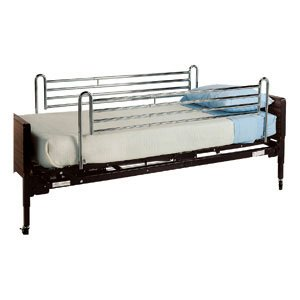

Les contraintes du métier
Le week-end, lorsque les infirmières intérimaires ne viennent pas
ou arrivent en retard, nous restons pour distribuer les
médicaments du matin et aidons les
d'A.S.
aide-soignante
de jour pour les toilettes jusqu’à l’arrivée d’une infirmière.
Notre nuit peut ainsi se terminer à midi.
Certes, le service ne nuit est épuisant mais quel bonheur de
pouvoir profiter un peu de notre journée après le repos du matin.
Le week-end, c’est difficile de concilier la vie de famille et
honorer les invitations des amis et des proches. De temps en temps
il me faut suivre le mari et je ne dort pas de la journée. Quand
on fait des nuits, personnellement
je ne dors que 3 à 4 heures pour repartir le soir revoir mes
résidents.
Après quinze années de service de nuit, ma collègue Jalila, quitte
la fondation Lépine pour exercer son activité vers le service à
domicile. Je me retrouve avec une autre collègue Viviane. Diplômé
aide-soignante, elle m’annonce qu’elle souhaite être grutière
Cette personne impose sa loi et refuse de travailler en équipe.
Elle décide de travailler chacun dans son étage, ce que la
directrice a toujours refusée. Une nuit, une résidente passe
par-dessus les
RIDELLES

. de son lit. Je lui demande de m’aider à la remettre dans son
lit. Elle me répond : ‘’ Tu te débrouilles’’ Elle refuse
d’effectuer certaines tâches malgré lui avoir dit que le travail à
deux est moins épuisant.
mais elle voulait surtout en finir au plus vite de sa tournée afin
de se reposer le plus tôt possible. D’où la nécessité de ne pas
être contraint par le rythme de ses collègues.